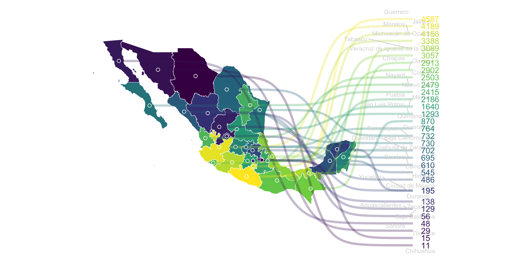

Situación Epidemiológica del Dengue en Tlaquiltenango, Morelos.
Dr. Felipe Dzul Manzanilla
Dr. Santos Ramírez-Carreto
Dra. Grea Moreno-Banda
Fecha: 2024-08-30

Ciclo de Transmisión del Dengue y Ciclo de Vida del Vector
Ciclo de Transmisión del Dengue 
Ciclo de vida del mosquito 
Como Puedo Identificar Si Tengo Dengue

Como Puedo Identificar Si Tengo Dengue

Situación Epidemiológica del Dengue a Nivel Mundial

Situación Epidemiológica del Dengue en Morelos

Que puedo hacer para prevenir el dengue

Que puedo hacer para evitar la picadura del mosquito

Que puedo hacer para evitar la picadura del mosquito

Dios Botic
email : felipe.dzul.m@gmail.com
celular : 9999580167